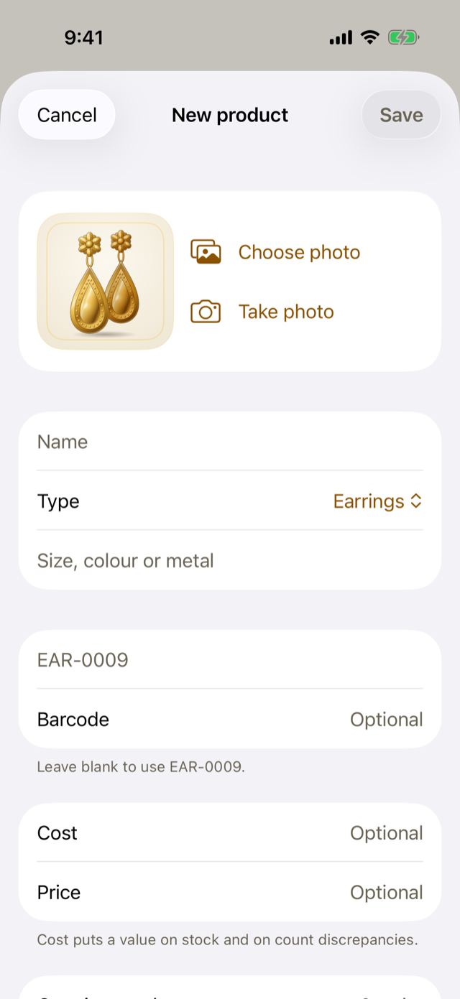
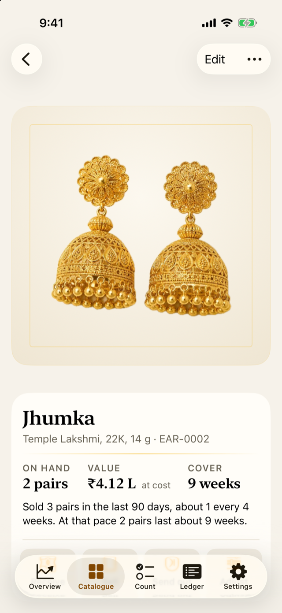

5 The catalogue
For the owner
- How to add a product, and what each detail is for.
- How to import a whole catalogue from a spreadsheet, safely.
- What piece tags are, and how they link to products.
5.1 The idea
The catalogue is the list of every product the shop sells (Chapter 1). Each product has a name, a type, a SKU, and optionally a variant, a barcode, a cost, a list price, a photo and notes. Jholok needs the catalogue before it can record movements or count anything.
There are two ways to build it: add products one at a time, or import them all from a spreadsheet. Most shops start with an import, then add new designs by hand as they arrive.
5.2 In the app
Add a product
In the Catalogue tab, tap +.
- Photo: choose one or take one. Without a photo, Jholok draws a picture of the piece from its type and name.
- Name and Type: required.
- Variant: what sets this design apart, such as “Temple Lakshmi, 22K, 14 g”.
- SKU: leave it blank and Jholok makes one from the type, such as EAR-0009, or type your own. No two products can share a SKU.
- Barcode: the product’s barcode, if it has one.
- Cost and Price: what you paid for one, and what you ask. Cost puts a value on stock and on what a count finds short or over.
- Opening stock: how many the shop has now. It goes into the ledger as an opening stock movement. After that, stock changes only through movements: receipts, sales, returns, adjustments and counts.
Editing a product later never changes its stock.
A product’s page
Tap a product in the catalogue to open its page. At the top, On hand, Value and Cover (Chapter 1), or In the shop, Off the shelf and Value when some of it is sent out (Chapter 6), then a sentence about its pace of sales, the buttons to record a movement (Chapter 6), its stock history, its details and every movement.

From the ⋯ menu, Archive a product you no longer sell: it leaves the catalogue and the counts, but its history stays. A product with no history at all can be deleted instead.
Photos
Photos help people recognise products during a count. Picture matching (Chapter 9) compares box photos only with product photos, never with drawings. From the catalogue’s options menu, Take photos goes through every product without a photo, the most valuable first. For a catalogue that looks good together, use the same ivory card each time, in daylight, with the piece filling most of the frame.
Where a product has no photo, Jholok draws one. During counting, a small pencil marks a drawing, so nobody mistakes it for a photo of the piece in their hand.
Import a catalogue from a spreadsheet
Save the spreadsheet as a CSV file, then open Settings and tap Import catalogue from CSV.
The file needs a name and a type column. These are optional: sku, variant, barcode, cost, price and on_hand (the stock). Common other headings work too, such as “Product”, “Category”, “Code”, “MRP” or “Qty”. Amounts can be written as 1200, 1,200.50, ₹1,23,456, Rs. 450 or 450 INR.
Nothing changes until you’ve seen what the import will do. The preview lists the new products, the products it will update, and any rows it has to skip, with the reason and the line number, so you can fix them in the spreadsheet.
5.3 Why it works this way
- Importing never changes the stock of a product Jholok already has. A spreadsheet is often out of date. If its stock differs, the preview says how many products differ and suggests counting them instead. While a count is open, it doesn’t compare stock at all. Stock only changes through movements (Chapter 2).
- A blank cell never erases anything. If the spreadsheet has no cost for a product that has one in Jholok, the cost stays.
- One SKU, one product. Jholok treats
ear-0002andEAR-0002as the same, so a second product can’t take the code by accident. - A piece tag is one piece. That’s what lets a scan count a piece exactly once.
5.4 How it works
The import matches rows to products by SKU. A row with a SKU Jholok knows updates that product’s details. A row with a new SKU, or no SKU, makes a new product, and its on_hand becomes its opening stock. A type Jholok hasn’t seen becomes a new type. Jholok guesses its unit: pairs if the name has “earring” in it, sets if the name is or ends in “set” or “sets”, and pieces for the rest. You can change it in Settings → Product types.
5.5 Try it
Suppose the shop imports this spreadsheet:
| name | type | sku | variant | cost | price | on_hand |
|---|---|---|---|---|---|---|
| Jhumka | Earrings | EAR-0002 | Temple Lakshmi, 22K, 14 g | 2,06,010 | 2,45,000 | 5 |
| Band | Rings | RIN-0001 | Plain, 22K, 4 g | ₹66,500 | 11 | |
| Toe ring | Rings | Silver, 4 g | Rs. 950 | 1,400 | 6 |
Jholok would:
- update the Temple Lakshmi jhumka (EAR-0002): its price becomes ₹2,45,000, but its stock stays at 2 pairs, although the file says 5. The preview says “1 existing product has different stock in the file”, and suggests counting it;
- update the plain band (RIN-0001): its price becomes ₹66,500, and the blank cost leaves its cost as it was;
- add the toe ring as a new product, with a SKU made from its type, RIN-0006 (the next after RIN-0005), a cost of ₹950, a price of ₹1,400 and an opening stock of 6.
Question. The spreadsheet says you have 5 Temple Lakshmi jhumkas, but Jholok says 2. What should you do?
TipAnswer
Count them. If the count finds 5, the approver accepts the difference and the ledger records a count adjustment, so the reason for the change is kept. If it finds 2, the spreadsheet was out of date.
- A product needs a name and a type. Jholok makes a SKU if you don’t give one.
- Opening stock goes into the ledger. After that, stock changes only through movements.
- Importing never changes existing stock, and a blank cell never erases a value.
- A barcode belongs to a product; a piece tag belongs to one piece.